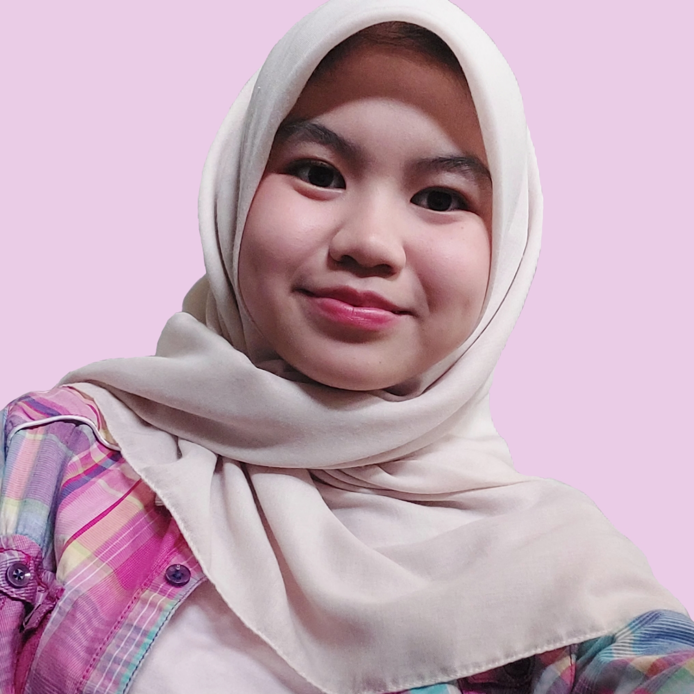

IT Student at PNJ | Unexpected Journey
Teknik Informatika (TI 2B)
Mencoba bertahan di tengah badai UTBK.
Masa-masa paling santai, hidup cuma main ML aja.
Jujur aja, pas masa UTBK dulu aku bener-bener clueless mau masuk jurusan apa. Pilihan satu dan dua yang aku ambil malah tabrakan banget jalurnya. Rasanya kayak cuma milih berdasarkan "kayaknya bagus deh" tanpa tau risikonya apa.
Sampai akhirnya pengumuman keluar, dan aku keterima di pilihan ketiga: Teknik Informatika PNJ. Tempat yang sebelumnya nggak pernah ada di bayanganku. Dari yang awalnya nggak paham apa-apa, sekarang malah tiap hari ketemu sama logika pemrograman, pointer C++, sampai pusingnya nyari titik koma yang hilang.
Lucunya, di balik semua rasa pusing itu, aku justru nemu keseruan baru. Ternyata menerima dan menjalani sesuatu bisa jadi proses belajar yang nggak terduga. Mungkin ini memang jalan yang terbaik buatku. Sekarang, aku cuma ingin menjalani semuanya pelan-pelan, dengan caraku sendiri.
"Enjoy the journey, even the unexpected ones!"